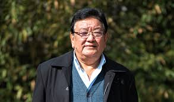

About Dr.Sanduk Ruit
Dr. Sanduk Ruit is a renowned ophthalmologist and humanitarian from Nepal, celebrated for his transformative contributions to eye care and blindness prevention. Born in 1954 in Olangchung Gola, a remote village in eastern Nepal, he rose from humble beginnings to become a global pioneer in affordable and accessible cataract surgery. Dr. Ruit co-founded the Tilganga Institute of Ophthalmology in Kathmandu and developed a low-cost cataract microsurgery technique that has restored sight to hundreds of thousands of people, particularly in underserved regions of Asia and Africa. His innovation in using inexpensive intraocular lenses made modern cataract surgery affordable and accessible to the poor, earning him the nickname "The God of Sight." He has received numerous accolades, including the prestigious Ramon Magsaysay Award in 2006, for his dedication to eliminating preventable blindness and empowering communities through better eye care. Dr. Ruit's groundbreaking work has inspired countless others to pursue innovation and service in global healthcare.
"I always believed that the ultimate reward of life is giving back and helping others see the beauty of this world."
Quick Facts
| Attribute | Details |
|---|---|
| Born | 1954 |
| Field | Ophthalmologist |
| Notable Work | Development of Low-Cost Cataract Surgery |